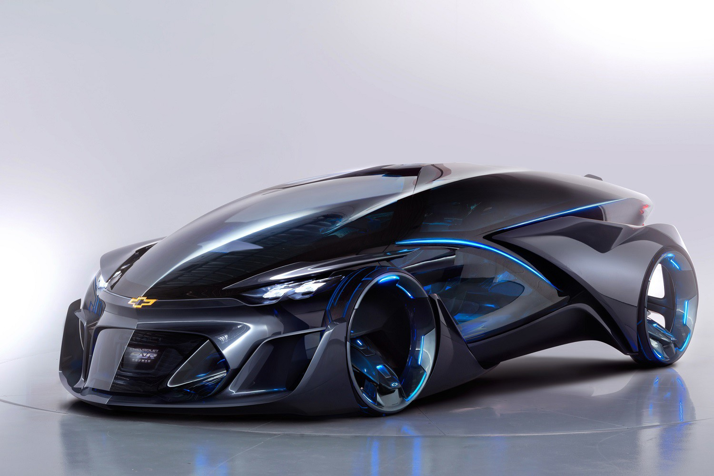
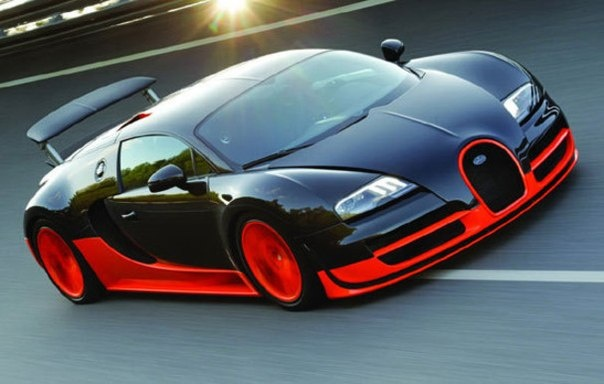

| НОВОСТИ | ГАЛЕРЕЯ | ОТЗЫВЫ |

| Mercedes-Benz презентовал купеобразный GLE Coupe В апреле 2014-го
Немецкий автопроизводитель представил на автосалоне в Пекине прототип Mercedes-Benz Concept Coupe, который превратился в серийный вседорожник под названием GLE Coupe. Его мировая премьера состоялась на мотор-шоу в Детройте 2015, а европейцам новинку покажут в Женеве. |
|
|
 ТОП-10 лучших автомобилей 2015 года по версии 1gai.ru Мы проанализировали различные экспертные оценки всех новых автомобилей, которые доступны на мировом авторынке, а также динамику их продаж или предварительных заказов, чтобы определить победителей. Кроме того, мы определили для каждого автомобиля уровень цитирования в прессе, чтобы понять о каком автомобиле чаще всего публиковались статьи. Подробнее |
|

|

|